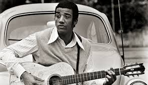

:Radio do zera:
TOP FIVE
"construção"
Chico Buarque

"Menina bonita não chora"
Jorge Bem
"Dis que fui por ai"
Nara Leão
VIDEOCLIPES MAIS VISTOS:
Toquinho (aquarela)
Cartola (O Sol Nascerá)
João Gilberto (chaga de saudade)
Novos baianos (Linguagem Do Alunte)
Martinho da vila (disritmia)
Escute ainda mais dessas musicas na radio -clicando aqui